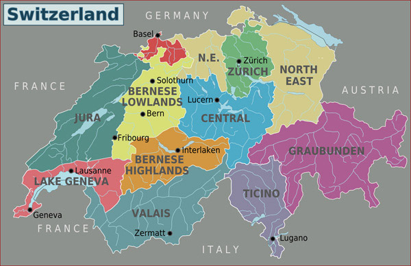

Switzerland

Switzerland, officially the Swiss Confederation, is a landlocked country located at the confluence of Western, Central and Southern Europe.It is bordered by Italy to the south, France to the west, Germany to the north and Austria and Liechtenstein to the east. Switzerland is geographically divided among the Swiss Plateau, the Alps and the Jura; the Alps occupy the greater part of the territory, whereas most of the country's population of 9 million are concentrated on the plateau, which hosts the largest cities and economic centres, including Zürich, Geneva and Basel.
Switzerland is the birthplace of the Red Cross and hosts the headquarters or offices of most major international institutions, including the WTO, the WHO, the ILO, FIFA, and the United Nations. It is a founding member of the European Free Trade Association (EFTA), but not part of the European Union (EU), the European Economic Area, or the eurozone; however, it participates in the European single market and the Schengen Area. Switzerland is a federal republic composed of 26 cantons, with federal authorities based in Bern.
To Know History of Switerland Click here
Top Ten Places To Visit In Switerland
- Jungfrau
- Bern
- Lake Geneva
- Zermatt
- Swiss National Park
- Bellinzora
- Jura Mountains
- Lake Lucerne
- Basel
- Zurich
About Tourism
There are plenty of reasons to travel to Switzerland. We cant even try and dissuade you from it by saying its one of the most expensive countries in the world. Switzerland is busting at the seams with alpine lakes, dramatic cliff faces, mountains, modern cities, flower-filled meadows, charming villages like Grindelwald, fresh air, alphorns, and free-roaming dairy cows. Its easy to see the allure.
Switzerlands economic development has been affected by specific physical and cultural geographic factors. In the first instance, the country has few raw materials; precipitation and soil quality largely determine the type and size of cultivation; urban and industrial expansion encroach on the limited amount of cultivable land; the commerce and transport sectors have benefited from Switzerlands central location along international trade routes; and tourism has been boosted by the landscapes exceptional scenic beauty, including glacial peaks and Alpine lakes. In the second instance, the inability of the countrys small domestic market to absorb the total output of a skilled and efficient population forced Switzerland to seek world markets. Thus, by importing raw materials and converting them into high-quality, high-value-added finished products for export, developing a highly organized and efficient transportation system and tourist industry, and establishing a free-market orientation, Switzerland generally has been able to keep unemployment low and inflation under control and has achieved among the worlds highest standards of living and per capita incomes.